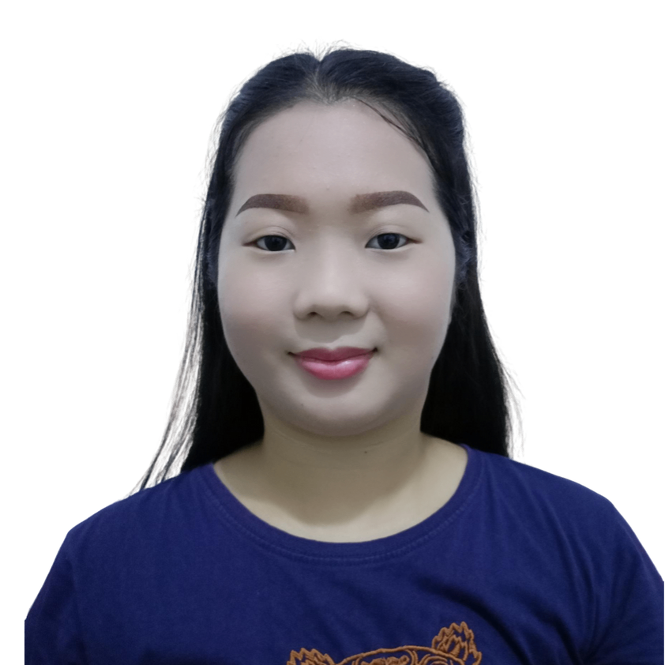

Enierose Santos

Summary
Eager and fast-learning professional with a background in information technology. Proven experience in data analysis and
healthcare administration, demonstrating efficiency and productivity. Strong interpersonal skills and a collaborative mindset.
Ready to contribute to a dynamic tech company while continuously expanding my knowledge and skills.
Education
Nueva Ecija University of Science and Technology
Bachelor of Science in Information Technology
Major in Database Application Programming
Work Experience
Accenture, Inc. | Manila, Philippines
Data Analyst
Business Process Delivery Associate / Health Operations New Associate
April 18, 2022 - July 22, 2024 (2 years, 4 months)
- Analyzed complex data using multiple systems to identify trends, anomalies, and opportunities for process improvement.
- Handled a high volume of healthcare claims, including medical, hospital, and dental, ensuring timely and accurate processing.
- Conducted thorough claim reviews, audits, and reworks to identify and resolve errors, minimizing financial risks.
- Proactively identified and addressed complex claim scenarios, demonstrating strong problem-solving skills.
- Reviewed and analyzed contracts to ensure compliance with regulatory requirements and client specifications.
- Calculated and applied accurate pricing based on contract terms, contributing to revenue optimization.
- Updated and maintained patient and partner information in relevant systems, ensuring data accuracy and integrity.
- Led knowledge-sharing sessions and provided technical coaching to new team members, fostering a collaborative and supportive work environment.
- Actively participated in training programs on AI, data security, hacking, and Cigna University courses, continuously developing technical skills.
- Consistently exceeded performance expectations and met tight deadlines, demonstrating strong time management and organizational skills.
Flores - Dizon Dental Clinic | Nueva Ecija, Philippines
Dental Assistant
December 04, 2017 - December 09, 2021 (4 years)
- Provided comprehensive support in various dental procedures, ensuring optimal patient care and efficient clinic operations.
- Managed patient records and appointments using Patient Management System, resulting in a 20% increase in clinic efficiency.
- Implemented a new sterilization protocol for dental instruments, reducing cross-contamination risks by 30%.
- Contributed to patient education on post-surgical care, leading to a 15% decrease in post-operative complications.
- Organized dental supplies inventory, ensuring availability of necessary materials for all scheduled procedures.
- Took initiative in mentoring and training new dental assistants, sharing knowledge and expertise.
Skills
- Microsoft Office (Excel, Word, PowerPoint), Adobe Photoshop, Canva, MySQL,
- Computer Hardware & Network: Installation, Formatting, Troubleshooting and Maintenance,
- Highly motivated, analytical, adaptable, forward thinker, positive attitude, resourceful,
curious, time management, tasks prioritization, works smart, problem solver, individual contributor,
collaborator, effective communicator, good attention to details, technical, loves to document, willingness to explore, and learn new skills thru lifelong learning.
Other
Contact Details
My Website